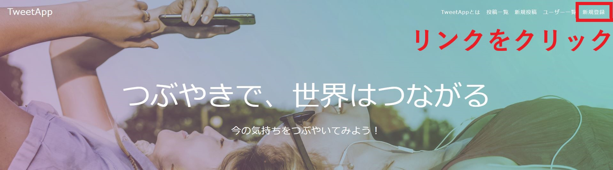
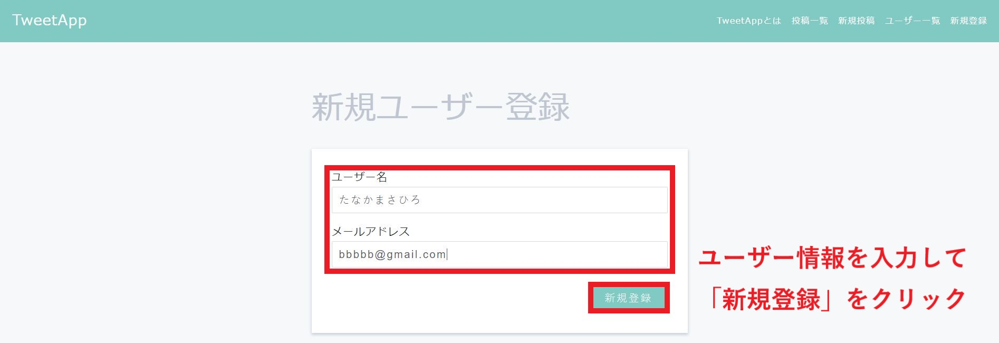
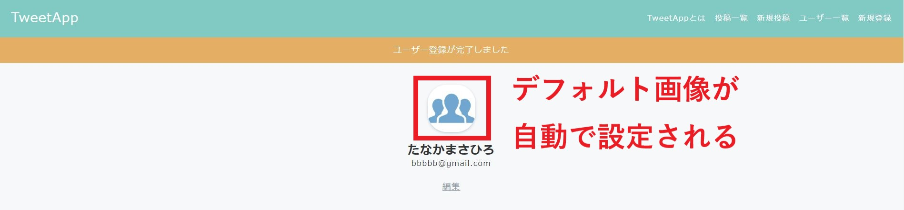
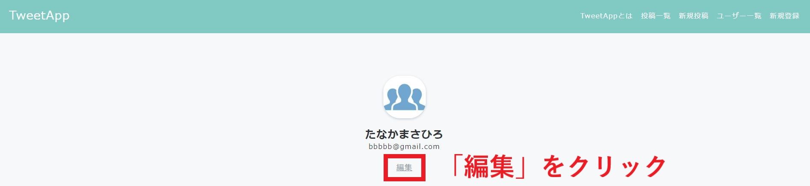
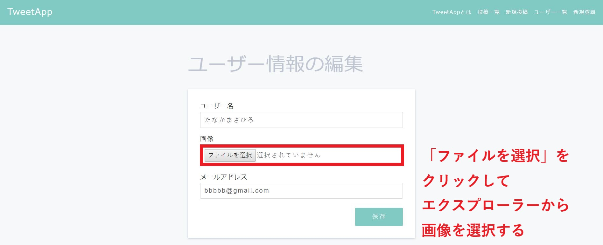
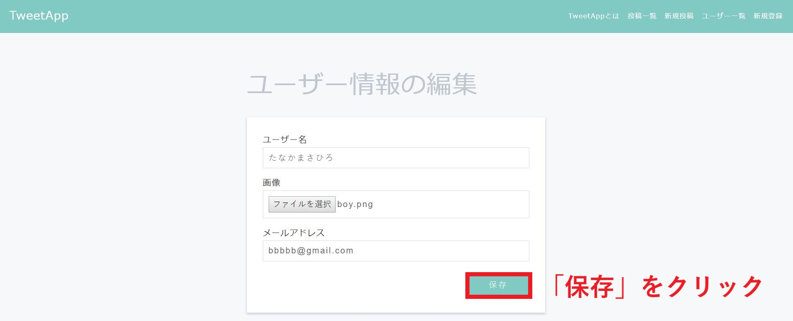
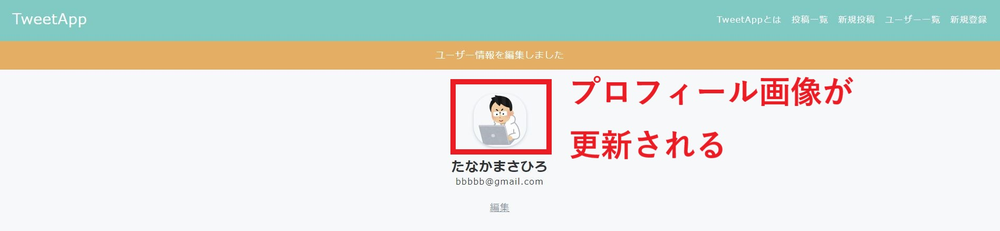

プロフィール画像設定機能
制作イメージ
プロフィール画像設定機能を作成してください。
1. 新規ユーザー登録時
1-1. 任意のページ

1-2. 新規ユーザー登録ページ

1-3. ユーザー詳細ページ

2. プロフィール画像編集
2-1. ユーザー詳細ページ

2-2. ユーザー編集ページ_画像選択前

2-3. ユーザー編集ページ_画像選択後

2-4. ユーザー詳細ページ

【カラム追加】
◆Userテーブルに下記カラムを追加してください。
・マイグレーションファイル名：add_image_name_to_users
・カラム名：image_name
・データ型：string
【デフォルト画像表示】
◆tweet_app/publicフォルダ直下に「user_images」フォルダを作成し、その中にプロフィール画像を保存するようにしてください。
◆新規ユーザー登録された際に初期画像が設定されるようにしてください。画像は下記ダウンロードファイル内の「default_user.jpg」としてください。
◆/users/index.html.erbの<div class="users-index-item">の直後に以下のコードを貼り付け、プロフィール画像表示されるよう編集してください。
※貼り付けコード：<div class="user-left"><!-- <img>タグを用いて、プロフィール画像を表示してください --></div>
◆/users/show.html.erbの<div class="user">の直後に、<img>タグを使用してプロフィール画像表示されるよう編集してください。
◆初期設定画像は下記リンクからダウンロードし、使用してください。
【プロフィール画像編集】
◆ユーザー編集ページのユーザー名とメールアドレスの間にプロフィール画像のアップロードフォームを作成してください。
◆ファイル名をデータベースへ保存する際、ファイル名は「ユーザーid.jpg」となるようにしてください。
※Ex）idが「1」の場合：「1.jpg」
◆users_controller.rbで画像を保存する処理は、フォームから画像データが送信された場合だけ実行されるようにしてください。
・画像ダウンロード